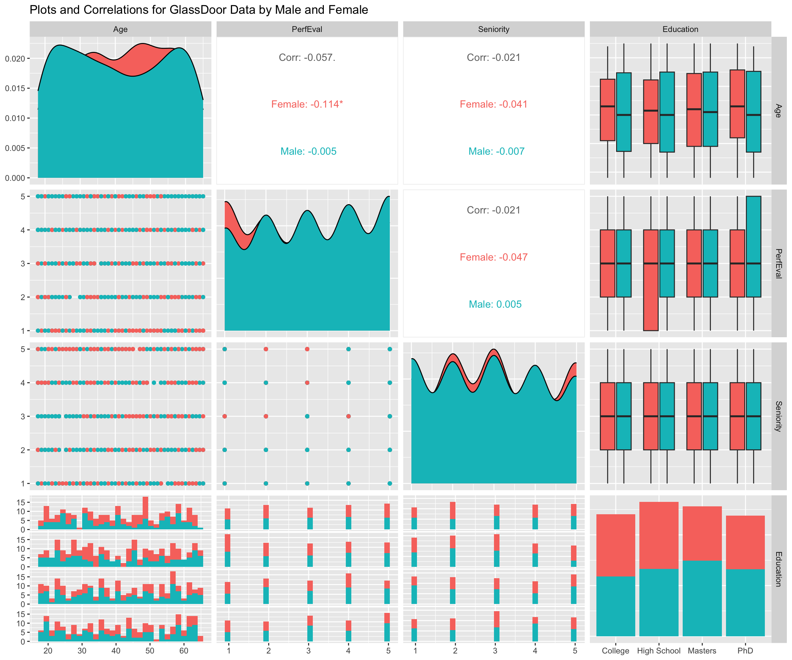

In today’s workplace, Diversity, Equity, and Inclusion (DEI) go beyond just policies; they’re about ensuring everyone is treated and compensated fairly, regardless of gender, race, or any other protected characteristic. One area gaining a lot of attention is the gender pay gap (GPG), which shows differences in average pay between men and women. With recent directives like the upcoming EU pay transparency regulation, companies are increasingly required to report pay data, making GPG a critical topic for HR teams.
More companies are now reporting their GPG numbers, and with these new laws, most will soon be required to make these numbers public. Traditionally, this analysis might have been handled by finance teams, but as People Analytics grows in HR, data experts in HR are stepping in to help ensure accurate, meaningful GPG reporting. However, calculating and interpreting GPG can be challenging, as it involves many factors that require careful consideration.
In this post, we’ll cover key metrics that help HR teams assess GPG and discuss how certain analytical choices can impact the results. Plus, I’ll share some code to make implementing these calculations straightforward for your team.
Key Metrics for Gender Pay Gap Reporting
When it comes to gender pay gap (GPG), two main metrics are often reported: the Unadjusted and Adjusted Gender Pay Gap.
Unadjusted Gender Pay Gap (UGPG): This measures the difference in average pay between all male and female employees, presented as a percentage of average male pay. UGPG is a high-level metric, reflecting overall pay differences without considering job type, experience, or role.
Adjusted Gender Pay Gap (AGPG): This digs a bit deeper. AGPG adjusts for factors like role, experience, and other structural differences to provide a more direct comparison of pay between men and women in similar positions. It shows the difference in average pay when comparing employees in “comparable positions,” expressed as a percentage of average male pay.
Determining an AGPG can be tricky, though, since deciding what qualifies as “comparable positions” and which factors should be “adjusted for” can vary between companies and contexts. Questions like “What defines a comparable position?” and “How should we adjust for structural differences?” are crucial to get accurate and meaningful GPG results.
In the following sections, I’ll break down these metrics step-by-step and include code examples you can use to start calculating GPG metrics in your organization.
As we can see this data set contains 1000 individual records of salary, bonus, job title etc.
Data Exploration
Before diving into calculating the UGPG and AGPG, let’s have a look at the data characteristics broken down by gender.

On the diagonal of this plot grid we can see the distributions for base pay age, performance, sentiority and education. On the off-grid plots, we can see the joint plots. What stands out is that there seems to be some gender differences in terms of Age, performance evaluation, seniority and education.
Unadjusted Gender Pay Gap
The first step in analyzing the GPG would be the average difference in pay between man and women, also called the Unadjusted Gender Pay gap. In our case we will be calculating this metric following the definition above which is \[
\text{UGPG} = \frac{\text{Avg. male earnings} - \text{Avg. female earnings}}{\text{Avg. male earnings}} \times 100\%
\]
avg_pay_men =mean(df[df['Gender'] =='Male', 'BasePay'])avg_pay_women =mean(df[df['Gender'] =='Female', 'BasePay'])GPG =round(((avg_pay_men-avg_pay_women)/avg_pay_men)*100,2)paste0("The Unadjusted Gender Pay Gap is = ", GPG, "%")
[1] "The Unadjusted Gender Pay Gap is = 8.65%"
As we can see, the UGPG seems to be -8.65% meaning that women earn, on average, 8.65% less than men. However, this metric is quite rough as it does not take into account other characteristics that may be relevant to someone’s pay, such as their job title, years of experience etc. For accounting for these characteristics we will, thus, calculate the adjusted GPG.
Adjusted GPG
Oaxaca Blinder
A typical approach to calculate the AGPG is the Oaxaca-Blinder method. This approach is a statistical method used to decompose pay differences into explainable factors (differences in education or experience) and unexplainable factors (someone’s gender). This method allows for a clearer understanding of how much of the pay gap can be explained by measurable differences versus systemic inequalities.
Let’s see how we can apply the Oaxaca-Blinder method to our dataset
#library(oaxaca)library(psych)library(OaxacaBlinder)#Salary variables are often skewed so we first log transform it to make it approximately normaldf_clean$BasePay_log =log(df_clean$BasePay)#Oaxaca-blinder requires to have the "grouping" variable dummified, here we have Men coded as 0 and Women coded as 1df_clean$Gender_fac =ifelse(df_clean$Gender =="Male", 0, 1)#oaxaca.results = oaxaca(BasePay_log ~ Age + PerfEval + Education + Seniority + Dept + JobTitle | Gender_fac, data = df_clean)twofold =OaxacaBlinderDecomp(formula = BasePay_log ~ Age + PerfEval + Education + Seniority + Dept + JobTitle | Gender_fac,data = df_clean,type ="twofold",baseline_invariant =TRUE,n_bootstraps =100)#AGPG = round(((oaxaca.results$y$y.A - oaxaca.results$y$y.B)/oaxaca.results$y$y.A)*100,2)#paste0("The AGPG estimated through Oaxaca-Blinder = ", -1*AGPG, "%")summary(twofold)
What we can see from the Oaxaca-blinder results is that the Gender pay gap amounts to 0.83%, indicating that women earn, on average, 0.83% less than men.
IPW
An issue that is often overlooked by the Oaxaca-Blinder is that of group comparability. For instance, we coud have Male in their early thirties with a specific job function (e.g., sales associate) and seniority but not female counterparts, and vice versa. This is a common situation since female may tend to concentrate in certain occupations for which specific skills are more likely to be found, whereas male may concentrate in other occupations. This issue is also known as “common support” issue, which is crucially overlooked by the Oaxaca-blinder. In fact, since in the Oaxaca-blinder model there are no restrictions imposed on estimating earnings for male and female with comparable characteristics Ñopo, 2004.
A procedure that allows us to account for group comparability is that of Inverse Probability Weighting Regression Adjustement (IPWRA).
formula_ipw ='Gender_fac ~ Age + PerfEval + Education + Seniority + Dept + JobTitle'formula_lm ='BasePay_log ~ Age + PerfEval + Education + Seniority + Dept + JobTitle'weights_ipw =glm(formula_ipw,family =binomial(link ='probit'),data = df_clean) # Step 1: Calculate ipw weightsipw_w =predict(weights_ipw, df_clean, type ='response')outcome = df_clean$Gender_facdf_clean$ipw_wts = (outcome/ipw_w) + ((1-outcome)/ (1-ipw_w)) # Step 2: Fit Weighted Regression Models for Each Gender Group# Model for femalesmodel_female <-lm(formula_lm, data=df_clean, subset = (Gender_fac ==1), weights = ipw_wts)# Model for malesmodel_male <-lm(formula_lm, data=df_clean, subset = (Gender_fac ==0), weights = ipw_wts)# Step 3: Calculate Average Treatment Effect (ATE)# Get predicted values for females and malesdf_clean$predicted_female =predict(model_female, newdata = df_clean, type ="response", subset = (female ==1))df_clean$predicted_male =predict(model_male, newdata = df_clean, type ="response", subset = (female ==0))# Step 4: Calculate the average predicted wagesmean_predicted_female =mean(df_clean$predicted_female, na.rm =TRUE)mean_predicted_male =mean(df_clean$predicted_male, na.rm =TRUE)# Step 5: Calculate the Average Treatment Effect (ATE)ATE =exp(mean_predicted_female) -exp(mean_predicted_male)# Display the ATE as a percentageATE_percentage = (ATE /exp(mean_predicted_male)) *100cat("The estimated Average Treatment Effect (ATE) of being female on wage is:", round(ATE_percentage, 2), "%\n")
The estimated Average Treatment Effect (ATE) of being female on wage is: -1.46 %
# fit with ipw weights#formula_lm = 'BasePay_log ~ Gender_fac'#mod = lm(formula_lm, data = df_clean, weights= ipw_wts)#library(marginaleffects)#comp = avg_comparisons(mod, # variables = 'Gender_fac', # vcov =~subclass, # newdata = subset(df_clean, Gender_fac ==1), # wts = 'ipw_wts')#AGPG_ipw = round((exp(comp['estimate'])-1)*100,2)#paste0("The AGPG estimated by IPW is = ", AGPG_ipw, "%")
Matching
library(MatchIt)match =matchit(as.formula(formula_ipw), method ='full', data = df_clean,distance ='glm')# Checking balance after cem matchingsummary(match, un =FALSE)
df_out =match.data(match)# Step 3: Estimate the Treatment Effect with Weights# Use the weights in the linear modelmod_matched <-lm(BasePay_log ~ Gender_fac, data = df_out, weights = weights)# Step 4: Calculate the Average Treatment Effect# The coefficient on 'female' now represents the weighted estimate of the treatment effectsummary(mod_matched)
Call:
lm(formula = BasePay_log ~ Gender_fac, data = df_out, weights = weights)
Weighted Residuals:
Min 1Q Median 3Q Max
-2.66459 -0.11628 0.05193 0.17386 0.90939
Coefficients:
Estimate Std. Error t value Pr(>|t|)
(Intercept) 11.39233 0.01212 940.333 <2e-16 ***
Gender_fac -0.02583 0.01771 -1.459 0.145
---
Signif. codes: 0 '***' 0.001 '**' 0.01 '*' 0.05 '.' 0.1 ' ' 1
Residual standard error: 0.2794 on 998 degrees of freedom
Multiple R-squared: 0.002127, Adjusted R-squared: 0.001127
F-statistic: 2.127 on 1 and 998 DF, p-value: 0.145
# Step 5: Convert the Effect from Log Wage to Percentage# Extract the coefficient for femalefemale_coef <-coef(mod_matched)["Gender_fac"]ATE_percentage <- (exp(female_coef) -1) *100cat("The estimated Average Treatment Effect (ATE) of being female on wage #is:", round(ATE_percentage, 2), "%\n")
The estimated Average Treatment Effect (ATE) of being female on wage #is: -2.55 %
# fit with ipw weights#formula_lm = 'BasePay_log ~ Gender_fac'#mod = lm(formula_lm, data = df_out, weights= weights)#comp = avg_comparisons(mod, # variables = 'Gender_fac', # vcov =~subclass, # newdata = subset(df_out, Gender_fac ==1), # wts = 'weights')#AGPG_match = round((exp(comp['estimate'])-1)*100,2)#paste0("The AGPG estimated by full matching is = ", AGPG_match, "%")